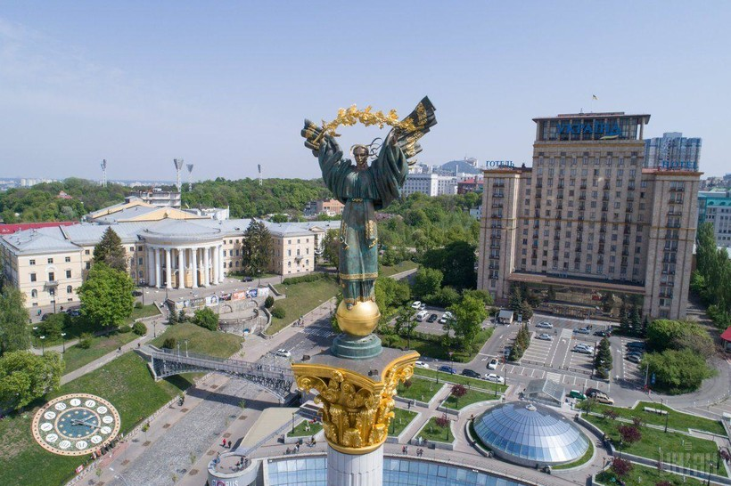
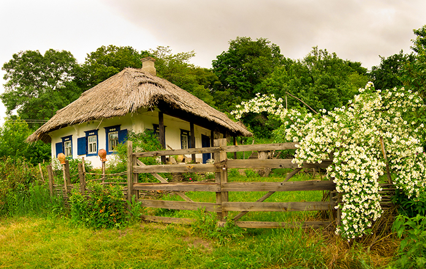
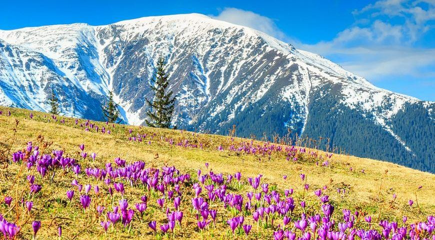

Майбутнє, що проростає з пам’яті
Майбутнє — не десь там, а вже тут, у кожному слові, у кожному погляді вперед.
Це не просто країна. Це голос, що звучить крізь століття, і тиша, що лікує.
Українська мова — як струмок у весняному лісі: чиста, дзвінка, жива.
Вона мовчить — і це теж мова. Вона говорить очима, жестами, тінню на стіні.
У містах — дзеркальні фасади, шум трамваїв. У селах — запах хліба, вечірні розмови біля воріт.
Місто — ритм, що не зупиняється.

Село — спокій, що не вимагає пояснень.

Ми пам’ятаємо — і славу, і втрати. У кожному камені — відлуння історії.
Майбутнє — не десь там, а вже тут, у кожному слові, у кожному погляді вперед.
Україна — це не лише великі події, а й дрібниці, що гріють серце. Це ранкова кава на балконі в Києві, коли сонце торкається старих дахів Подолу. Це усмішка продавчині на базарі в Чернівцях, що знає твої вподобання. Це діти, що граються біля школи в Краматорську, і запах яблук у вересні на Волині. У кожному дні — щось світле, щось справжнє, щось наше.
У Маріуполі — це вітер з моря, що пахне свободою, і вечірні розмови на лавці біля під’їзду. У Полтавщині — це тиша полів, що приймає тебе як рідну. У Львові — запах кави й старовинні двері, у Харкові — вечірній трамвай і світло вікон. Ми живемо не лише в історії, а й у миттєвостях, що творять її. І саме ці миті — коли хтось допоміг, коли хтось подякував, коли хтось просто був поруч — роблять Україну такою, якою ми її любимо. Світло тут — не метафора, а реальність, що живе в людях.

Весна в Карпатах — як тиха обіцянка, що все живе повертається до світла.